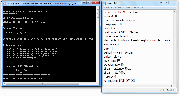

Server.cfg RU
From SA-MP Wiki
[edit]
Server.cfg
  Запущенный сервер!
Запущенный сервер!
Описание:
server.cfg - это файл конфигурации сервера, который позволяет изменять настройки вашего sa-mp сервера, как, например, его название, подключение дополнительных фильтрскриптов и плагинов или даже пароль, если вы хотите таковой установить.
Этот файл необходим для каждого сервера и должен быть расположен в папке сервера рядом с его программой.
Этот файл необходим для каждого сервера и должен быть расположен в папке сервера рядом с его программой.
[edit]
Настройки
В следующей таблице приведено детальное объяснение для каждого параметра:
| Параметр | Значение по умолчанию | Только для чтения | Результат |
|---|---|---|---|
| echo | Да | Это то, что sampserver.exe выводит при загрузке server.cfg. Нет необходимости менять это вообще, т.к. вы будете единственным, кто увидит консоль. По умолчанию выводится Executing Server Config... | |
| lanmode | 0 | Нет | Устаревшая переменная, не имеет эффекта. |
| maxplayers | 50 | Да | Это значение задаёт максимальное количество игроков на сервере; изменяя это число, вы можете изменить число игроков, которое сможет войти в сервер. Максимум 1000 и минимум 1. |
| announce | 0 | Нет | Позволяет отображаться серверу в SA-MP мастер-листе (вкладка "Internet"). Установив 1 это включит его отображение, 0 - отключит. |
| query | 1 | Нет | Позволяет отправлять запросы на сервер. Если это будет отключено, то информация о сервере не будет отображаться в браузере серверов. Установите 1 для выполнения запросов или 0 для их отключения. (Игроки по-прежнему могут войти на сервер, который отключил обработку запросов!) |
| port | 7777 | Да | Порт, который сервер будет использовать для связи, может быть изменён здесь. Вам нужно Пробросить Порты для того, чтобы запустить сервер. |
| hostname | SA-MP 0.3 Server | Нет | Это имя, которое будет отображаться в браузере серверов для просмотра другими пользователями. |
| gamemode(n) (N) (t) | gamemode0 grandlarc 1 | Нет | Возможность установить gamemode, который будет выполняться, как долго он будет выполняться и в какой последовательности путём изменения этих значений. Чтобы использовать это правильно, вы должны понимать, как это работает, (n) это номер режима игры, (N) это название режима игры*, и (t) это количество времени, которое будет выполняться мод перед его сменой на следующий.
|
| weburl | www.sa-mp.com | Нет | Это веб-сайт, который люди могут посетить, чтобы получить более подробную информацию о сервере. Веб-адрес не требуется. |
| rcon_password | Нет | Это пароль, используется для администрирования сервером и использования rcon. Вы должны убедиться, что изменили это на что-то трудно подбираемое, чтобы другие не могли получить контроль над вашим сервером. По умолчанию этот параметр установлен на changeme. Ваш сервер НЕ запустится, если в качестве RCON пароля будет установлен "changeme"! | |
| filterscripts (N) | Да | Фильтрскрипты это скрипты, которые выполняются в фоновом режиме вашего мода, добавляя новые возможности на сервер без редактирования самого режима игры. Это очень полезно, если вы хотите добавить конкретные возможности для нескольких режимов одновременно. Чтобы использовать это, вам нужно найти в вашей папке сервера папку filterscripts и добавить ваши фильтрскрипты (.amx) туда. (N) означает название фильтрскрипта*. Если вы хотите загрузить сразу несколько фильтрскриптов, добавьте их все в одну строчку, разделяя их имена "пробелами", т.е. filterscripts script1 script2.
| |
| plugins (N) | Да | Это позволяет указать плагины, которые предназначены для улучшения игровых режимов и фильтрскриптов. (N) означает название плагина. Если вы хотите загрузить сразу несколько плагинов, добавьте их все в одну строчку, разделяя их имена "пробелами", т.е. plugins plugin1 plugin2.
| |
| password (p) | - (None) | Нет | Блокировка сервера паролем является еще одним вариантом, который доступен для rcon администратора сервера. Вы можете использовать эту функцию, чтобы не допускать нежелательных посетителей на сервер. (p) символизирует пароль, который будет использоваться. |
| mapname (m) | San Andreas | Нет | Название карты, которое будет отображаться в браузере серверов. (m) обозначает название карты.
|
| language | English | Нет | Определяет язык, используемый на сервере. Таким образом игроки могут фильтровать серверы по языкам в браузере серверов. Если он не установлен - он будет пустым.
|
| bind | Да | Принуждает сервер запускаться только с определённого IP. Этот IP должен соответствовать IP, назначенному сетевой картой сервера. Это полезно для запуска нескольких серверов на одном порту на одном и том же компьютере. | |
| rcon | 1 | Нет | Если задан 0, то функция удалённого управления через консоль будет отключена. |
| maxnpc | 0 | Нет | Максимальное количество NPC (ботов), которые могут присоединиться к вашему серверу. |
| onfoot_rate* | 40 | Да | Минимальное время в миллисекундах, через которое клиент будет обновлять сервер с новыми данными во время бега/ходьбы. |
| incar_rate | 40 | Да | Минимальное время в миллисекундах, через которое клиент будет обновлять сервер с новыми данными во время нахождения в транспорте. |
| weapon_rate | 40 | Да | Минимальное время в миллисекундах, через которое клиент будет обновлять сервер с новыми данными во время стрельбы из оружия. |
| stream_distance** | 300.0 | Нет | Расстояние по осям X, Y плоскостей, на котором объекты сервера будут отображаться для подключенных игроков. |
| stream_rate*** | 1000 | Нет | Число миллисекунд, которое должно пройти до того, как сервер вновь обновит данные потоковой передачи для каждого игрока. |
| timestamp | 1 | Нет | Включение/Отключение пометки времени. |
| logqueries | 0 | Нет | 0 для отключения, 1 для включения. Это регистрирует все запросы, отправленные игроками на сервер, что значительно полезно во время DDoS атак. |
| logtimeformat | [%H:%M:%S] | Да | Позволяет настроить формат временной метки (timestamp). Формат базируется на strftime формате из C/C++. Вот некоторые примеры:
|
| output | 0 | Включение/Отключение дублирования сообщений лога (например, напечатанного с print/printf из режимов игры или logprintf из плагинов) в консоли сервера. Если этот параметр установлен на 0 (по умолчанию), то сообщения печатаются только в лог сервера. Этот параметр работает только на серверах Linux. | |
| gamemodetext | Unknown | Нет | Установить текст режима игры. Аналогичный эффект, если вы используете функцию SetGameModeText. |
| chatlogging | 1 | Нет | Включение/отключение логирования игрового чата. Полезно отключить для предотвращения увеличения размера логов сервера или если вы имеете своё собственное решение для логирования.
|
| messageholelimit | 3000 | Нет | См. здесь. |
| messageslimit | 500 | Нет | Максимальное количество сообщений, которые пользователь может отправить за одну секунду. |
| lagcompmode | 1 | Да |
|
| ackslimit | 3000 | Нет | См. здесь. |
| playertimeout | 10000 | Нет | Время в миллисекундах, после которого игрок будет отключен от сервера с причиной "тайм-аут", если на протяжении этого времени не посылает никаких данных на сервер. |
| minconnectiontime | 0 | Нет | Время в миллисекундах, которое сервер будет ждать, прежде чем принять другое входящее соединение. |
| connseedtime | 300000 | Нет | Используйте, чтобы задать, как часто будет обновляться значение подключений cookie.
|
| sleep | 5 | Нет | Время в миллисекундах, на протяжении которого основной sa-mp и raknet сетевой поток будет "спать" (ничего не делать во время каждого цикла синхронизации). Используя более высокие значения, сервер потребует меньшего количества CPU, но качество синхронизации сильно пострадает. Используя более низкие значения, сервер будет потреблять больше ресурсов процессора, но позволит повысить производительность серверной синхронизации. Не рекомендуется изменять это значение, за исключением, если онлайн на вашем сервере очень высок и имеются проблемы со стабильностью fps сервера. |
| conncookies | 1 | Нет | Если задан 0, это отключит систему подключений cookie, добавленную в 0.3.7.
|
| cookielogging | 1 | Нет | Если задан 0, это отключит логирование cookies, запрошенных вновь подключившимися игроками.
|
| db_logging | 1 | Нет | Логирование ошибок sqlite db_* функций в основной server_log.
|
| db_log_queries | 1 | Нет | Логирование всех sqlite db_query() вызовов, включая строку запроса.
|
[*] Более низкие значения onfoot_rate, incar_rate и weapon_rate улучшат качество синхронизации, но ухудшат пропускную способность сервера.
[**] stream_distance При больших значениях игроки могут видеть объекты сервера на большем расстоянии, хотя потребуется больше ресурсов клиентов и потенциально более высокая пропускная способность.
[***] stream_rate Более низкие значения приведут к большей активности CPU, поскольку это чаще будет перепроверять состояния потоковой передачи для каждого игрока.
[edit]
Примечания
- Значения, отмеченные как "Только для чтения", не могут быть изменены во время выполнения. Все остальные значения также могут быть изменены посредством взаимодействия с SendRconCommand.
- Однако, stream_distance и stream_rate могут быть изменены во время работы сервера, введя в игре команды /rcon stream_distance 300.0 или /rcon stream_rate 1000.
- (Гейм-)Моды (и Фильтрскрипты) не обязательно должны быть расположены в "gamemodes/" или "filterscripts/". Информация в server.cfg представляет собой путь и может содержать "..": (Цитата пользователя Y_Less)
filterscripts ../scriptfiles/first ../minimodes/second

{kind=link}